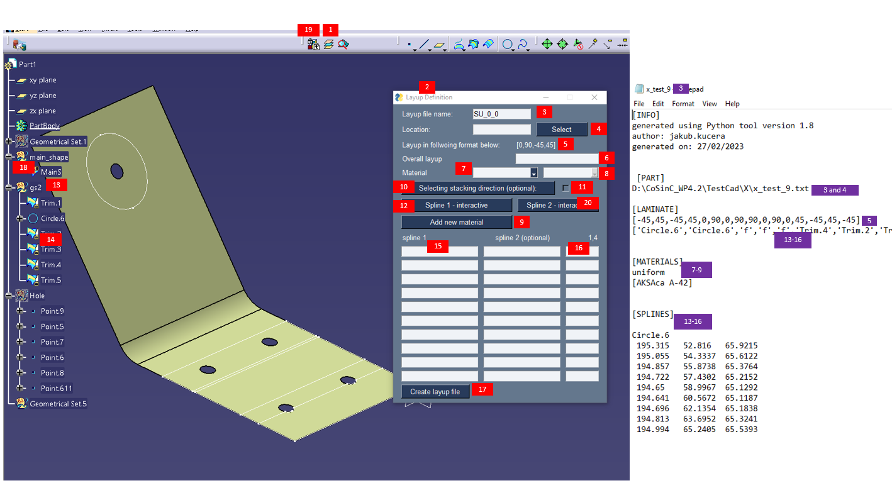

User Guide 3.0 and older¶
The layup definition (LD) user guide follows the numbering on Figure 2. Red boxes highlight the use of the LD too. The purple boxes highlight how the same action reflect in an example .txt layup definition file.
Setup (eventually author aims to automate this step)
None NCC users
Currently full packaged executable is not available for external users. Therefore cloning of this library is required.
Then user can then run python script layup_definition.py in their local Python installation. For simplcity backup_env.yml should be used to build local Python environment.
Alternatively, user can generate .exe file from layup_definitin.py after library has been cloned and environment was set-up. This can be done by for example library called pyinstaller. This will allow the user to follow the steps below for NCC user and integrate this tool with CATIA.
NCC users
Download the following from https://dev.azure.com/NCCDevOps/NCC%20General/_git/LD : InitExe.catvbs , Import.catvbs, “current release” folder containing two zipped files.
Unzip the two release files in an empty repository. Avoid cloud storage and “downloads”.
For convenience of use the author recommends binding the LD tool to Catia toolbar. This youtube video describes how to bind a macro to a button in Catia: https://www.youtube.com/watch?v=BNAGviNNF88 The short macro that initiates the Python script is available in the repository: “InitExe.catvbs”. It is important to open the “InitExe.catvbs” and adjust the path to the Python script to current explicit location. The path should point to layup_definition.exe which is provided in “current release” folder, the files under “current release” need to be unzipped, but can be placed anywhere on users PC, provided path can be specified in CATIA. Similarly, to bind the Catia macro inside Catia successfully, it is recommended to move the “InitExe.catvbs” to your default Catia macro location. Alternatively any folder can be added to CATIA library in: Tools ==> macro ==> Macros. Same process can be followed to implement importing function/button with Import.catvbs.
Successful setup of Catia macro should allow for the “Layup Definition” window to display upon the button press.
“Layup file name” field has to be the same as the Catia part name, or equivalent. If part is opened prior to initiation of the layup definition, the part should be automatically filled.
“Location” points the LD to your working directory, must contain the CatPart and should contain version of “LD_layup_database.txt”. More details on that file below.
Example sequence, to be used in 6. Not the starting and ending brackets, delimitation by “,” , and “-” convention.
Follow the example sequence to create overall layup. All layers present anywhere on the “MainS” (18) should be listed.
First material related box allows for binary selection between single material layup, and variable material layup. If variable material layup is selected, additional pop-up menu is provided for definition of individual layers. Every layer needs to be defined.
When “uniform” is selected in (7) one material has to be selected here from database. Otherwise, this field is automatically filled from (7).
This allows for adding a material to database. This material is than made available for (7) & (8).
Stacking direction does not have to be defined, but might be useful for some applications. Currently the recommended method is simple point vector definition. The point is required for as a start reference somewhere on tool surface.
Shows a tick-mark if “stacking direction” has been properly defined by (10).
This allows for drop-off definitions. Spline-type geometry is selected from the Catia tree, by clicking this button the name of the reference spline is projected into the selected field in (15) or below.
Currently the reference splines must all be stored in “gs2” geometry set. The only other visible geometry in the part should be the main surface “MainS”. This will be made flexible in future releases.
Names under “gs2” should show under (15) upon selection+(12) button press.
Has been explained above.
Selects plies dropped of at spline shown in (15). The ply reference numbers start with “1” and correspond to position on the “Overall layup” list.
Generates the layup file in selected working folder.
“main_shape” geometrical set must exist and must contain the overall part surface “MainS”. The current version of LD only supports one surface at a time. This also means that this geometrical set must not contain any other geometries.
Same process as for (1) can be followed for layup import functionality. The “Import.catvbs” is the corresponding macro. The “Layup_CATimport.py” is the corresonding Python script.
Spline 2 button is optional, allows for specification of zone-drop-offs. All plies specified on the same row will be dropped off in equal steps between the two splines specified. This is newest functionality and it still needs improvements/bug-fixes.
“LD_layup_database.txt” is a comma delimited database of materials. Material parameters are explained on first row. Each other row corresponds to 1 material entry. The LD could also be hooked to an SQL database, but for now the simple comma delimited database makes sharing of the LD tool easier.